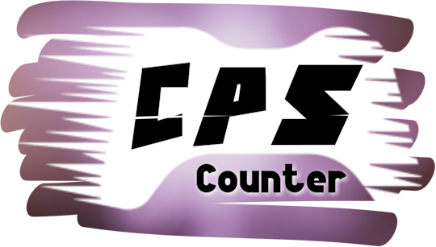

CPS Counter

This is a free CPS counter, which offers two simple ways to counting you clicks per second ratio: 1 second blast test (innacurate but quick) and 10 second test (accurate but well takes 10 seconds to be finished).
It also offers the ability the back up your data to a file using a KingNUS account (discontinued concept, maybe I'll write more about it someday) and the ability to check your progress until jitter click (13CPS).
Note: Please excuse the horrible image quality, BlueStacks just refuses to work on a higher resolution.
DOWNLOAD
Android
CPS Counter
Version 1.3
FREE
Version: 1.3 (Released 5/9/2020)
Last Patch: 22/1/2024 (Compatibility Issues)
Release Type: Stable
Update 1.3 Changelog:
GIANT UPDATE! UI is completely redesigned; CPS test shows cps even during the test, lots of error/bug/language fixes... AND THAT'S NOT THE END! Download to see more!
FEATURES
Performance Monitor

A simple performance monitor, greeting you with a random tip, followed by your all-time best CPS measured.
Below that is a Jitter Click meter, which will tell you your speed according to my special CPS chart, accompanied with your progress to reaching Jitter Click (13 CPS)
CPS Chart

My own CPS chart made in 2019, the It-Sucks-Meter™
Customization

More customization than most nowadays apps!
- Me probably or something idk
Backup System

CPS Counter allows you to create a local KingNUS account or login to an already existing one (you can use the app without the account). Using the KingNUS account you can then backup your data to a file!
Two Different CPS Tests

this is wild mane, not one, but TWO and all for FREE!
what is this

how did i get here why is this in the app what is this good for